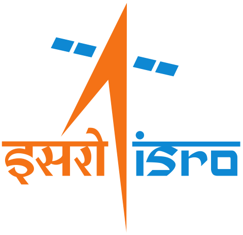

Exploring the Stars: A Journey with ISRO

Since its inception in 1969, the Indian Space Research Organisation (ISRO) has been at the forefront of India's space exploration endeavors. With a vision to harness space technology for national development, ISRO has achieved numerous milestones, making India proud on the global stage.
History and Milestones:
- Early Years: ISRO's journey began with the launch of Aryabhata, India's first satellite, in 1975. This marked the beginning of India's space odyssey.
- SLV Era: In the 1980s, ISRO developed the Satellite Launch Vehicle (SLV), which successfully launched satellites like Rohini and Apple.
- Pioneering Mars Mission: In 2013, ISRO made history with the Mars Orbiter Mission (Mangalyaan), becoming the first Asian nation to reach Mars orbit and the fourth space agency globally to do so.
- Chandrayaan Missions: ISRO's Chandrayaan-1
mission in 2008 discovered water molecules on the moon. Chandrayaan-2, launched in 2019, aimed to further explore the moon's surface, showcasing India's lunar exploration capabilities.
Technological Advancements:
- Reusable Launch Vehicle: ISRO is developing a reusable launch vehicle (RLV), aiming to reduce the cost of access to space.
- Gaganyaan Mission: ISRO's ambitious human spaceflight program, Gaganyaan, aims to send Indian astronauts to space, demonstrating India's capability in crewed missions.
- NavIC Navigation System: ISRO's Navigation with Indian Constellation (NavIC) provides accurate positioning services over India and the surrounding region, enhancing navigation and disaster management capabilities.
International Collaborations:
- Satellite Launch Services: ISRO has emerged as a reliable and cost-effective provider of satellite launch services, catering to international customers.
- Space Science Collaborations: ISRO collaborates with various space agencies worldwide on scientific missions, data sharing, and research initiatives, fostering international cooperation in space exploration.
Future Endeavors:
- Aditya-L1 Mission: ISRO's Aditya-L1 mission aims to study the sun's outermost layer, the corona, contributing to our understanding of solar dynamics and space weather phenomena.
- Interplanetary Missions: ISRO plans to explore Venus and other celestial bodies, expanding India's footprint in interplanetary exploration.
- Commercial Space Activities: ISRO is venturing into commercial space activities, including satellite launches, satellite-based services, and space tourism.
Leave a Comment: